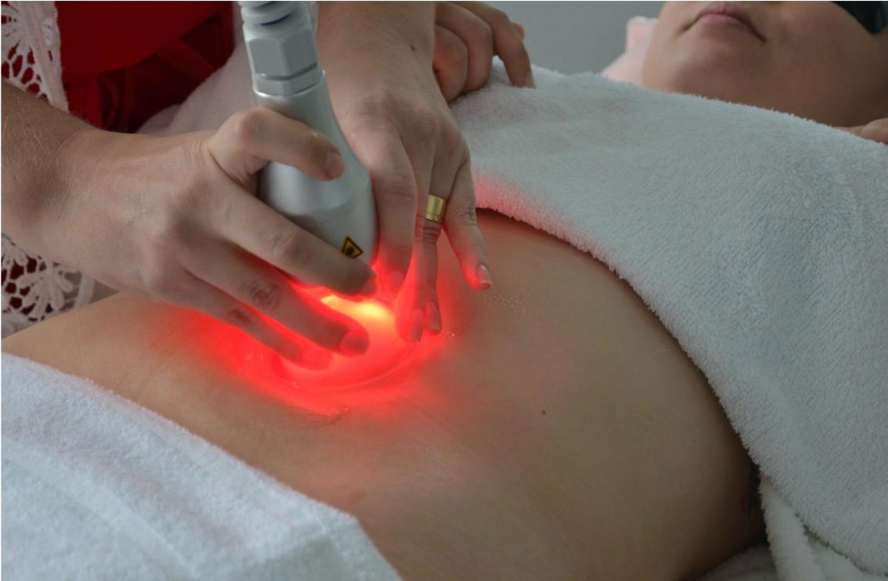
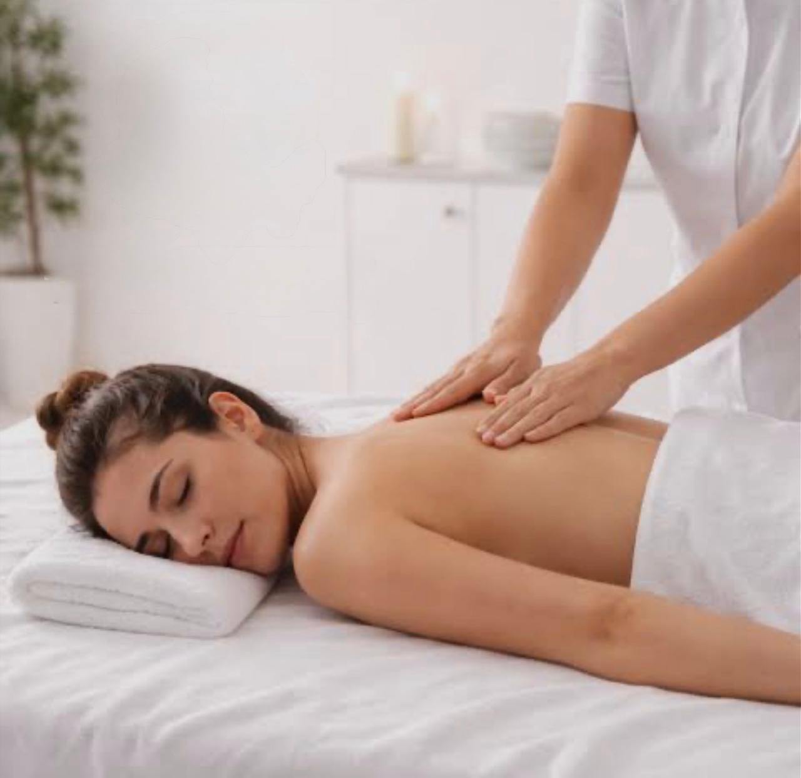
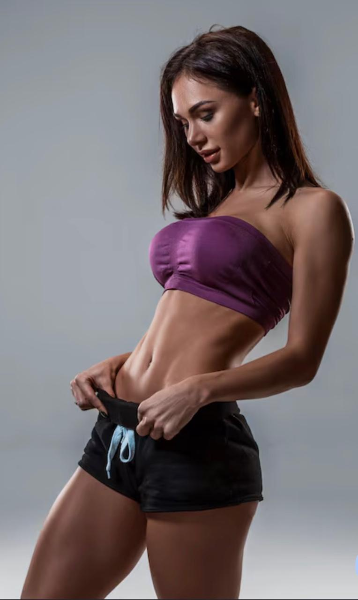
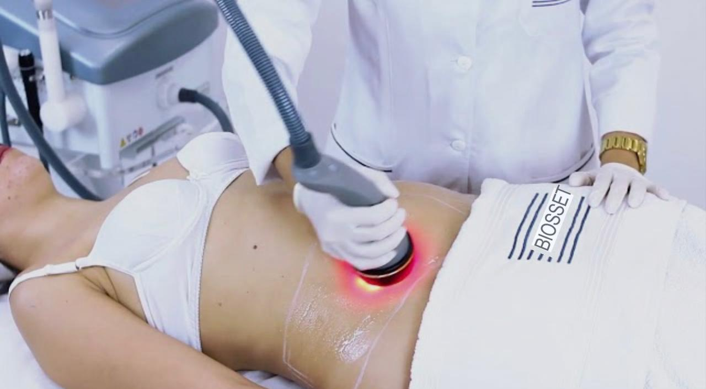
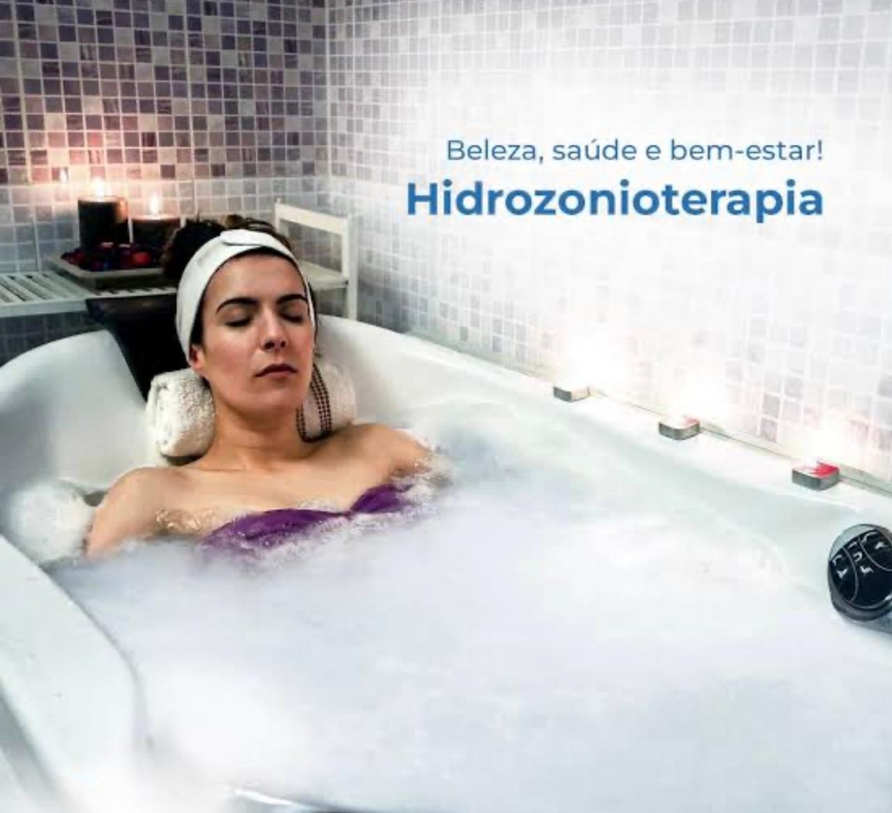

Tratamentos Corporais
Cuidar da sua pele é cuidar da sua aparência
Nossos tratamentos corporais são pensados para melhorar o contorno, reduzir medidas, estimular a circulação e promover bem-estar, com tecnologia e técnicas que potencializam resultados de forma segura e eficaz.

Drenagem Linfática Manual
Indicada para diminuição doinchaço, melhora da circulação,nos tratamentos de celulite egorduralocalizada. As manobrassuaves também promovem relaxamento geral.

Drenagem Pré e Pós-operatória
Protocolo especializado para acelerar a recuperação cirúrgica, reduzir edemas e garantir resultados mais satisfatórios e seguros. Realizada por profissional habilitada com experiência em cirurgias plásticas.

Drenodetox (com aparelho)
A Drenodetox é um protocolo corporal avançado que combina técnicas de drenagem linfática com tecnologia de endermoterapia (vácuo) associada ao infravermelho, potencializando os resultados de forma rápida e eficaz. O tratamento promove uma desintoxicação profunda do organismo, auxiliando na eliminação de líquidos retidos, melhora da circulação e remodelação corporal.

Drenodetox com Photon Dome
A Drenodetox com Photon Dome é um protocolo avançado que associa a drenagem com tecnologia de fototerapia (LED/infravermelho), promovendo desintoxicação profunda, redução de líquidos e melhora do funcionamento do organismo. A ação do Photon Dome potencializa os efeitos da drenagem, estimulando a circulação, auxiliando na eliminação de toxinas e promovendo um efeito revitalizante no corpo

Massagem Relaxante
A Massagem Relaxante é um protocolo terapêutico que utiliza manobras suaves e contínuas, promovendo o alívio das tensões musculares, redução do estresse e equilíbrio do corpo e da mente. Ideal para quem busca um momento de cuidado, tranquilidade e bem-estar em meio à rotina agitada.

Massagem Relaxante com Pedras Quentes
A Massagem Relaxante com Pedras Quentes é um ritual terapêutico que combina manobras relaxantes com o uso de pedras vulcânicas aquecidas, proporcionando um relaxamento profundo e uma experiência sensorial única. O calor das pedras penetra nos músculos, promovendo alívio imediato das tensões e equilíbrio físico e emocional.

Massagem Relaxante com Liberação Miofascial
A Massagem Relaxante com Liberação Miofascial combina técnicas de relaxamento com manobras profundas que atuam na fáscia muscular, promovendo alívio de tensões, dores e melhora da mobilidade corporal. Esse protocolo une bem-estar e tratamento, proporcionando relaxamento ao mesmo tempo em que libera pontos de tensão acumulados no corpo.

Massagem Relaxante com Photon Dome
A Massagem Relaxante com Photon Dome combina técnicas manuais relaxantes com a tecnologia de fototerapia por luz (LED/infravermelho), promovendo um relaxamento profundo aliado à regeneração e revitalização do organismo. O Photon Dome emite luz terapêutica que atua diretamente nos tecidos, auxiliando na melhora da circulação, redução de dores e estímulo celular.

Photon Dome – Detox Corporal
O Photon Dome é uma tecnologia avançada de calor (sauna seca) e fototerapia que utiliza infravermelho para estimular processos naturais do organismo, promovendo relaxamento, regeneração e equilíbrio corporal. O infravermelho penetra nos tecidos, ativando a circulação, auxiliando na redução de dores e proporcionando um efeito revitalizante profundo.

Pump Up — "Bumbum na Nuca"
O Pump Up tem o objetivo delevantar e modelar o bumbum. Otratamento também promove amelhora da celulite e da flacidez. Pode ser associado com acorrente australiana ou radiofrequência

Pump Up + Eletroestimulador
O Pump Up tem o objetivo delevantar e modelar o bumbum. O tratamento também promove amelhora da celulite e da flacidez. Associado nesse protocolo com O eletroestimulador para fortalecer os músculos do glúteo

Pump Up + Criofrequência
O Pump Up tem o objetivo de levantar e modelar o bumbum. O tratamento também promove a melhora da celulite e da flacidez. Associado nesse protocolo com a crio frequência para aumentar a produção de colágeno

Eletroestimulador — Fortalecimento Muscular
Promove fortalecimento muscular na área tratada por meio de impulsos elétricos que contraem os músculos de forma controlada. Excelente para recuperação muscular e modelagem corporal. Valor por área tratada.

Criolipólise de Placas — Quebra de Gordura
A Criolipólise de placas é líder de mercado e reduz até 25% de gordura na áreade aplicação. Inclui duas etapas adicionais em relação à criolipólise convencional.

Criofrequência Corporal
Indicada para flacidez tecidual, promove melhora significativa da aparência da pele. Combina frio e radiofrequência para estimular a produção de colágeno e remodelar o contorno corporal com precisão. Valor por região tratada.

Radiofotobiomodulação
A Radiofotobiomodulação é um protocolo que utiliza radiofrequência, endermoterapia (vácuo) luz LED e infravermelho para estimular a atividade celular, promovendo regeneração, redução de medidas, redução de celulite e melhora do funcionamento dos tecidos.

Tratamento para Lipedema
Protocolo especializado para o cuidado do lipedema, com técnicas manuais e aparelhos que aliviam dores, reduzem inchaço e melhoram a qualidade de vida. Acompanhamento individualizado e focado no conforto da paciente.

Esfoliação Corporal + Hidratação
A Esfoliação Corporal com Hidratação é um ritual de renovação da pele que remove células mortas, promove limpeza profunda e devolve maciez, brilho e vitalidade ao corpo. Após a esfoliação, é realizada uma hidratação intensiva, com manobras de drenagem, deixando a pele nutrida, sedosa e profundamente revitalizada.

Bioestimuladores Corporais de Colágeno
Os Bioestimuladores Corporais são tratamentos injetáveis que estimulam a produção natural de colágeno pelo organismo, promovendo firmeza, melhora da qualidade da pele e rejuvenescimento progressivo. Ao serem aplicados, os bioestimuladores ativam os fibroblastos, responsáveis pela produção de colágeno, proporcionando resultados naturais e duradouros. Podendo ser aplicados no abdômen e glúteo

Enzimas Redutoras de Medidas
As Enzimas Redutoras são um tratamento estético avançado que utiliza ativos aplicados diretamente na região a ser tratada, com o objetivo de auxiliar na redução de gordura localizada e melhora do contorno corporal. Os ativos atuam promovendo a quebra das células de gordura e estimulando o metabolismo local, contribuindo para a redução de medidas de forma gradual e progressiva.

Hidrozonioterapia
A Banheira de Hidrozonioterapia é um tratamento terapêutico que combina água aquecida com a ação do ozônio e cromoterapia, promovendo limpeza profunda, desintoxicação do organismo e relaxamento intenso. O ozônio possui propriedades antimicrobianas, antifúngicas e anti-inflamatórias, auxiliando na purificação da pele e no equilíbrio do corpo.